2024 National 5 Mathematics - Paper 1 marking instructions
Source: Scottish Qualifications Authority (SQA) / Qualifications Scotland. This is a StemInteract HTML companion, not an official HTML edition. Selectable text is supplied alongside original page images. Use the images or original PDF for equations, powers, fractions, vector notation, tables and diagrams; text extraction cannot fully preserve mathematical layout.
Jump to a question
PDF page 1
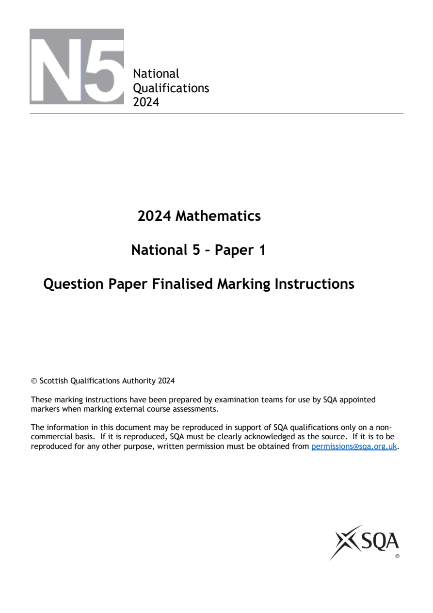
Selectable page text
National
Qualifications
2024
2024 Mathematics
National 5 – Paper 1
Question Paper Finalised Marking Instructions
© Scottish Qualifications Authority 2024
These marking instructions have been prepared by examination teams for use by SQA appointed
markers when marking external course assessments.
The information in this document may be reproduced in support of SQA qualifications only on a non-
commercial basis. If it is reproduced, SQA must be clearly acknowledged as the source. If it is to be
reproduced for any other purpose, written permission must be obtained from permissions@sqa.org.uk.PDF page 2
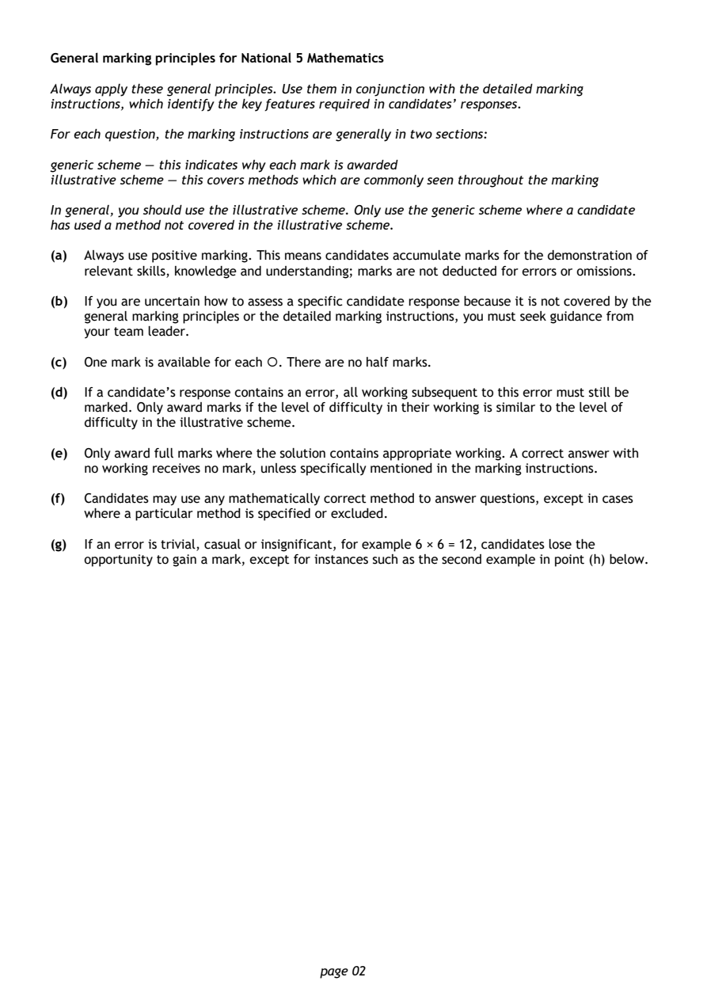
Selectable page text
General marking principles for National 5 Mathematics
Always apply these general principles. Use them in conjunction with the detailed marking
instructions, which identify the key features required in candidates’ responses.
For each question, the marking instructions are generally in two sections:
generic scheme — this indicates why each mark is awarded
illustrative scheme — this covers methods which are commonly seen throughout the marking
In general, you should use the illustrative scheme. Only use the generic scheme where a candidate
has used a method not covered in the illustrative scheme.
(a) Always use positive marking. This means candidates accumulate marks for the demonstration of
relevant skills, knowledge and understanding; marks are not deducted for errors or omissions.
(b) If you are uncertain how to assess a specific candidate response because it is not covered by the
general marking principles or the detailed marking instructions, you must seek guidance from
your team leader.
(c) One mark is available for each . There are no half marks.
(d) If a candidate’s response contains an error, all working subsequent to this error must still be
marked. Only award marks if the level of difficulty in their working is similar to the level of
difficulty in the illustrative scheme.
(e) Only award full marks where the solution contains appropriate working. A correct answer with
no working receives no mark, unless specifically mentioned in the marking instructions.
(f) Candidates may use any mathematically correct method to answer questions, except in cases
where a particular method is specified or excluded.
(g) If an error is trivial, casual or insignificant, for example 6 × 6 = 12, candidates lose the
opportunity to gain a mark, except for instances such as the second example in point (h) below.
page 02PDF page 3
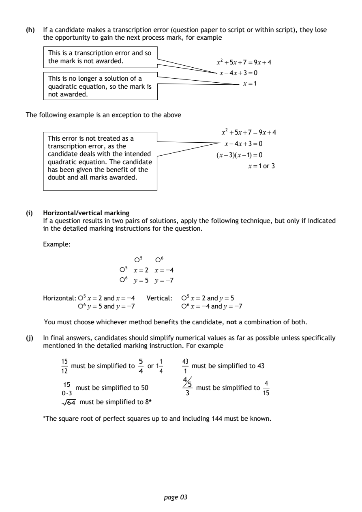
Selectable page text
(h) If a candidate makes a transcription error (question paper to script or within script), they lose
the opportunity to gain the next process mark, for example
This is a transcription error and so
the mark is not awarded. x² +5x+7 =9x+4
x−4x+3=0
This is no longer a solution of a
x=1
quadratic equation, so the mark is
not awarded.
The following example is an exception to the above
x² +5x+7 =9x+4
This error is not treated as a
x−4x+3=0
transcription error, as the
candidate deals with the intended (x−3)(x−1)=0
quadratic equation. The candidate
x=1 or 3
has been given the benefit of the
doubt and all marks awarded.
(i) Horizontal/vertical marking
If a question results in two pairs of solutions, apply the following technique, but only if indicated
in the detailed marking instructions for the question.
Example:
5 6
5 x = 2 x = −4
6 y = 5 y = −7
Horizontal: ⁵ x = 2 and x = −4 Vertical: 5 x = 2 and y = 5
6 y = 5 and y = −7 6 x = −4 and y = −7
You must choose whichever method benefits the candidate, not a combination of both.
(j) In final answers, candidates should simplify numerical values as far as possible unless specifically
mentioned in the detailed marking instruction. For example
15 5 1 43
must be simplified to or 1 must be simplified to 43
12 4 4 1
4
15 5 4
must be simplified to 50 must be simplified to
0·3 3 15
64 must be simplified to 8*
*The square root of perfect squares up to and including 144 must be known.
page 03PDF page 4
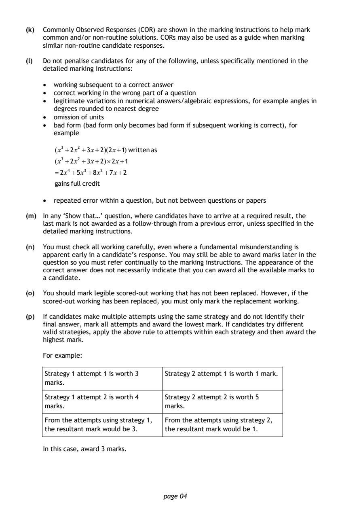
Selectable page text
(k) Commonly Observed Responses (COR) are shown in the marking instructions to help mark
common and/or non-routine solutions. CORs may also be used as a guide when marking
similar non-routine candidate responses.
(l) Do not penalise candidates for any of the following, unless specifically mentioned in the
detailed marking instructions:
• working subsequent to a correct answer
• correct working in the wrong part of a question
• legitimate variations in numerical answers/algebraic expressions, for example angles in
degrees rounded to nearest degree
• omission of units
• bad form (bad form only becomes bad form if subsequent working is correct), for
example
(x³ +2x² +3x+2)(2x+1) written as
(x³ +2x² +3x+2)×2x+1
=2x⁴ +5x³ +8x² +7x+2
gains full credit
• repeated error within a question, but not between questions or papers
(m) In any ‘Show that…’ question, where candidates have to arrive at a required result, the
last mark is not awarded as a follow-through from a previous error, unless specified in the
detailed marking instructions.
(n) You must check all working carefully, even where a fundamental misunderstanding is
apparent early in a candidate’s response. You may still be able to award marks later in the
question so you must refer continually to the marking instructions. The appearance of the
correct answer does not necessarily indicate that you can award all the available marks to
a candidate.
(o) You should mark legible scored-out working that has not been replaced. However, if the
scored-out working has been replaced, you must only mark the replacement working.
(p) If candidates make multiple attempts using the same strategy and do not identify their
final answer, mark all attempts and award the lowest mark. If candidates try different
valid strategies, apply the above rule to attempts within each strategy and then award the
highest mark.
For example:
Strategy 1 attempt 1 is worth 3 Strategy 2 attempt 1 is worth 1 mark.
marks.
Strategy 1 attempt 2 is worth 4 Strategy 2 attempt 2 is worth 5
marks. marks.
From the attempts using strategy 1, From the attempts using strategy 2,
the resultant mark would be 3. the resultant mark would be 1.
In this case, award 3 marks.
page 04PDF page 5
Paper 1, Question 1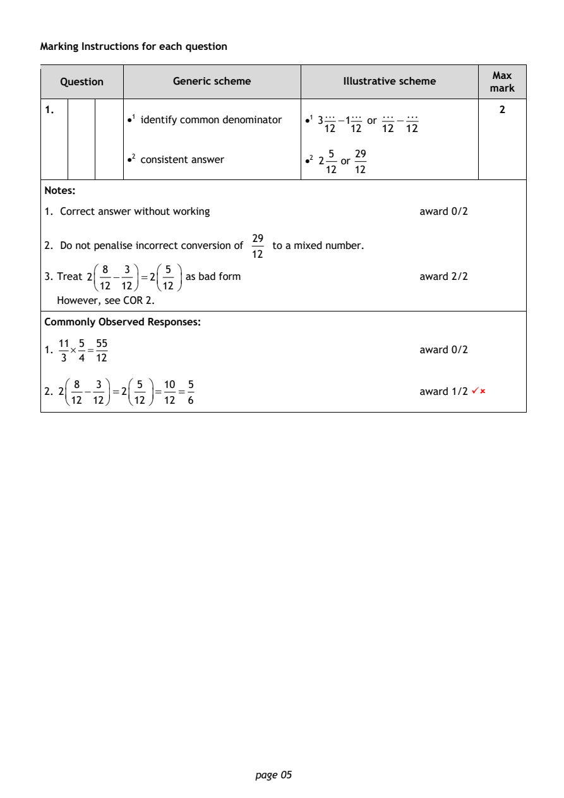
Selectable page text
Marking Instructions for each question
Max
Question Generic scheme Illustrative scheme
mark
1. 2
•1 identify common denominator •1 3 −1 or −
12 12 12 12
5 29
•2 consistent answer •2 2 or
12 12
Notes:
1. Correct answer without working award 0/2
29
2. Do not penalise incorrect conversion of to a mixed number.
12
8 3 5
3. Treat 2 − =2 as bad form award 2/2
12 12 12
However, see COR 2.
Commonly Observed Responses:
11 5 55
1. × = award 0/2
3 4 12
8 3 5 10 5
2. 2 − =2 = = award 1/2 ✓
12 12 12 12 6
page 05PDF page 6
Paper 1, Question 2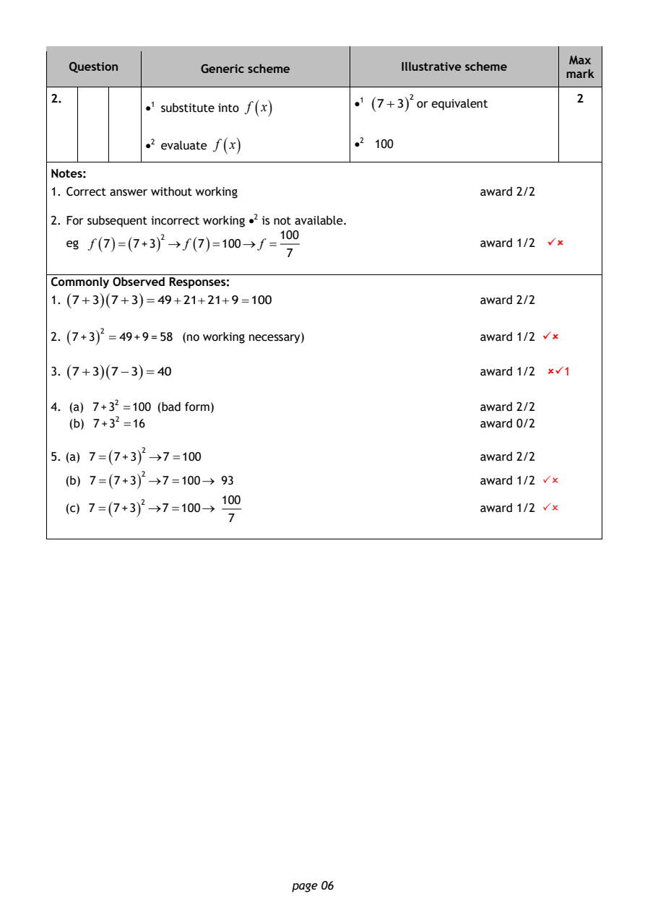
Selectable page text
Max
Question Generic scheme Illustrative scheme
mark
2. •1 substitute into f (x) •1 (7+3)²or equivalent 2
•2 evaluate f (x) •2 100
Notes:
1. Correct answer without working award 2/2
2. For subsequent incorrect working •² is not available.
100
eg f (7)=(7+3)²→ f (7)=100→ f = award 1/2 ✓
7
Commonly Observed Responses:
1. (7+3)(7+3)=49+21+21+9=100 award 2/2
2. (7+3)² =49+9=58 (no working necessary) award 1/2 ✓
3. (7+3)(7−3)=40 award 1/2 ✓1
4. (a) 7+3² =100 (bad form) award 2/2
(b) 7+3² =16 award 0/2
5. (a) 7 =(7+3)²→7 =100 award 2/2
(b) 7 =(7+3)²→7 =100→ 93 award 1/2
100
(c) 7 =(7+3)²→7 =100→ award 1/2
7
page 06PDF page 7
Paper 1, Question 3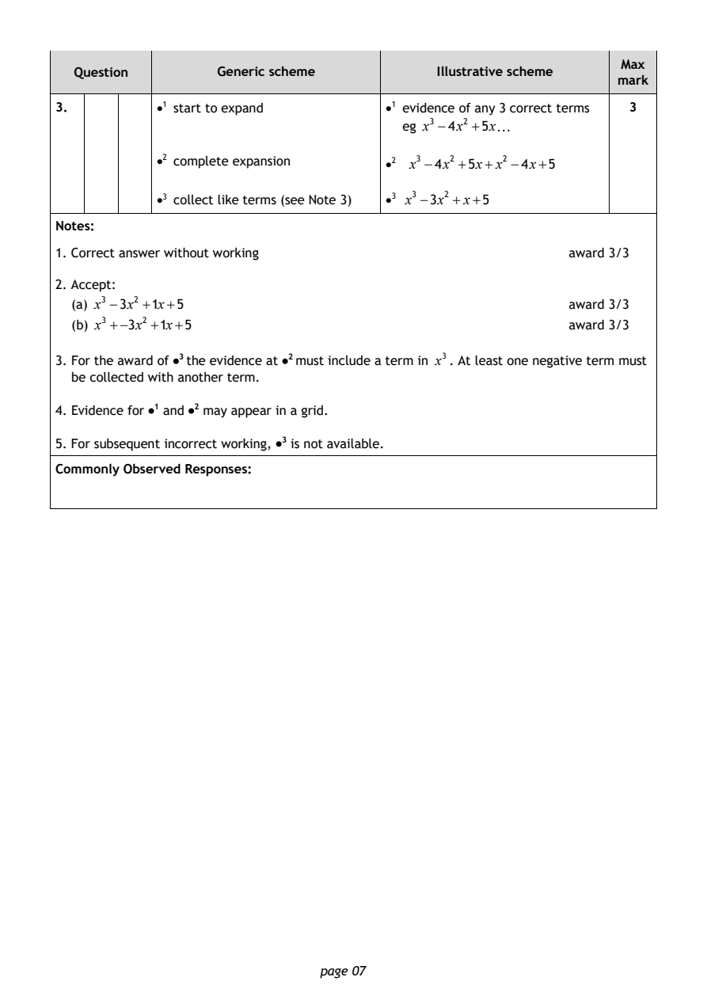
Selectable page text
Max
Question Generic scheme Illustrative scheme
mark
3. •1 start to expand •1 evidence of any 3 correct terms 3
eg x³ −4x² +5x
•2 complete expansion •2 x³ −4x² +5x+x² −4x+5
•3 collect like terms (see Note 3) •3 x³ −3x² +x+5
Notes:
1. Correct answer without working award 3/3
2. Accept:
(a) x³ −3x² +1x+5 award 3/3
(b) x³ +−3x² +1x+5 award 3/3
3. For the award of •³ the evidence at •² must include a term in x³. At least one negative term must
be collected with another term.
4. Evidence for •¹ and •² may appear in a grid.
5. For subsequent incorrect working, •³ is not available.
Commonly Observed Responses:
page 07PDF page 8
Paper 1, Question 4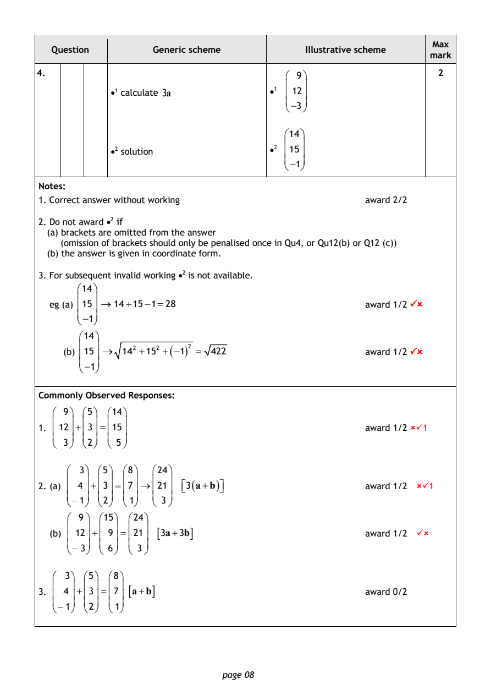
Selectable page text
Max
Question Generic scheme Illustrative scheme
mark
4. 9 2
•1 calculate 3a •1 12
−3
14
•2 solution •2 15
−1
Notes:
1. Correct answer without working award 2/2
2. Do not award •² if
(a) brackets are omitted from the answer
(omission of brackets should only be penalised once in Qu4, or Qu12(b) or Q12 (c))
(b) the answer is given in coordinate form.
3. For subsequent invalid working •² is not available.
14
eg (a) 15 →14+15−1=28 award 1/2
−1
14
(b) 15 → 14² +15² +(−1)² = 422 award 1/2
−1
Commonly Observed Responses:
9 5 14
1. 12 + 3 = 15 award 1/2 ✓1
3 2 5
3 5 8 24
2. (a) 4 + 3 = 7 → 21 3(a+b) award 1/2 ✓1
−1 2 1 3
9 15 24
(b) 12 + 9 = 21 [ 3a+3b] award 1/2 ✓
− 3 6 3
3 5 8
3. 4 + 3 = 7 [a+b] award 0/2
−1 2 1
page 08PDF page 9
Paper 1, Question 5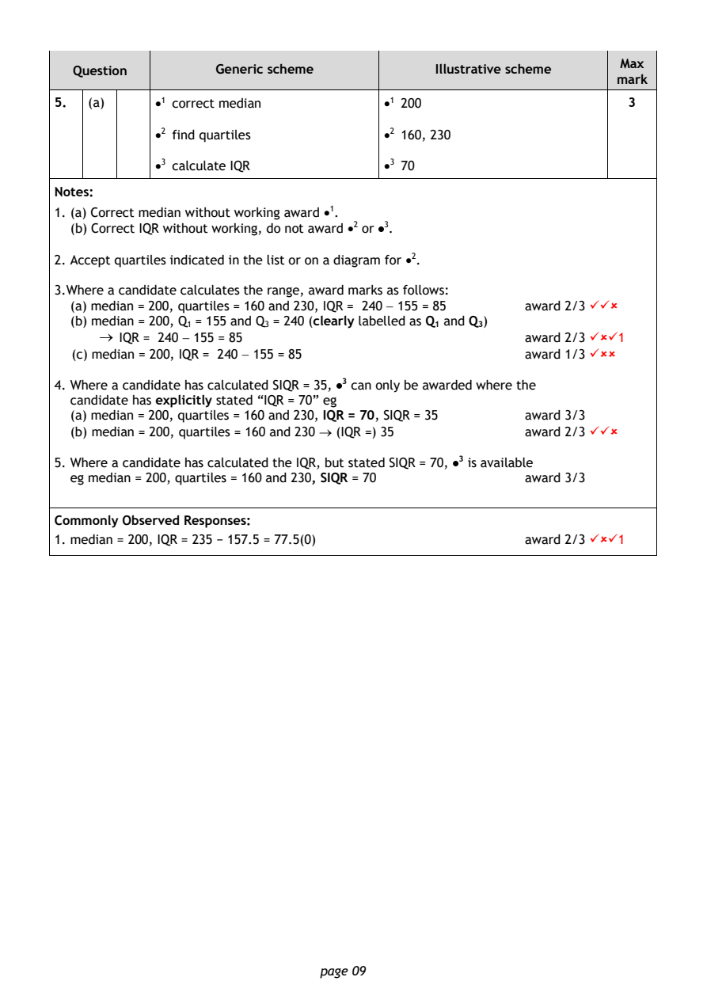
Selectable page text
Max
Question Generic scheme Illustrative scheme
mark
5. (a) •1 correct median •1 200 3
•2 find quartiles •2 160, 230
•3 calculate IQR •3 70
Notes:
1. (a) Correct median without working award •¹.
(b) Correct IQR without working, do not award •² or •³.
2. Accept quartiles indicated in the list or on a diagram for •².
3.Where a candidate calculates the range, award marks as follows:
(a) median = 200, quartiles = 160 and 230, IQR = 240 − 155 = 85 award 2/3 ✓✓
(b) median = 200, Q = 155 and Q = 240 (clearly labelled as Q and Q )
3 1 3
→ IQR = 240 −¹ 155 = 85 award 2/3 ✓✓1
(c) median = 200, IQR = 240 − 155 = 85 award 1/3 ✓
4. Where a candidate has calculated SIQR = 35, •³ can only be awarded where the
candidate has explicitly stated “IQR = 70” eg
(a) median = 200, quartiles = 160 and 230, IQR = 70, SIQR = 35 award 3/3
(b) median = 200, quartiles = 160 and 230 → (IQR =) 35 award 2/3 ✓✓
5. Where a candidate has calculated the IQR, but stated SIQR = 70, •³ is available
eg median = 200, quartiles = 160 and 230, SIQR = 70 award 3/3
Commonly Observed Responses:
1. median = 200, IQR = 235 − 157.5 = 77.5(0) award 2/3 ✓✓1
page 09PDF page 10
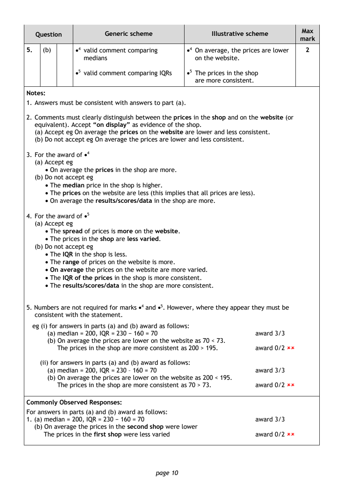
Selectable page text
Max
Question Generic scheme Illustrative scheme
mark
5. (b) •4 valid comment comparing •4 On average, the prices are lower 2
medians on the website.
•5 valid comment comparing IQRs •5 The prices in the shop
are more consistent.
Notes:
1. Answers must be consistent with answers to part (a).
2. Comments must clearly distinguish between the prices in the shop and on the website (or
equivalent). Accept “on display” as evidence of the shop.
(a) Accept eg On average the prices on the website are lower and less consistent.
(b) Do not accept eg On average the prices are lower and less consistent.
3. For the award of •⁴
(a) Accept eg
• On average the prices in the shop are more.
(b) Do not accept eg
• The median price in the shop is higher.
• The prices on the website are less (this implies that all prices are less).
• On average the results/scores/data in the shop are more.
4. For the award of •⁵
(a) Accept eg
• The spread of prices is more on the website.
• The prices in the shop are less varied.
(b) Do not accept eg
• The IQR in the shop is less.
• The range of prices on the website is more.
• On average the prices on the website are more varied.
• The IQR of the prices in the shop is more consistent.
• The results/scores/data in the shop are more consistent.
5. Numbers are not required for marks •⁴ and •⁵. However, where they appear they must be
consistent with the statement.
eg (i) for answers in parts (a) and (b) award as follows:
(a) median = 200, IQR = 230 − 160 = 70 award 3/3
(b) On average the prices are lower on the website as 70 < 73.
The prices in the shop are more consistent as 200 > 195. award 0/2
(ii) for answers in parts (a) and (b) award as follows:
(a) median = 200, IQR = 230 – 160 = 70 award 3/3
(b) On average the prices are lower on the website as 200 < 195.
The prices in the shop are more consistent as 70 > 73. award 0/2
Commonly Observed Responses:
For answers in parts (a) and (b) award as follows:
1. (a) median = 200, IQR = 230 − 160 = 70 award 3/3
(b) On average the prices in the second shop were lower
The prices in the first shop were less varied award 0/2
page 10PDF page 11
Paper 1, Question 6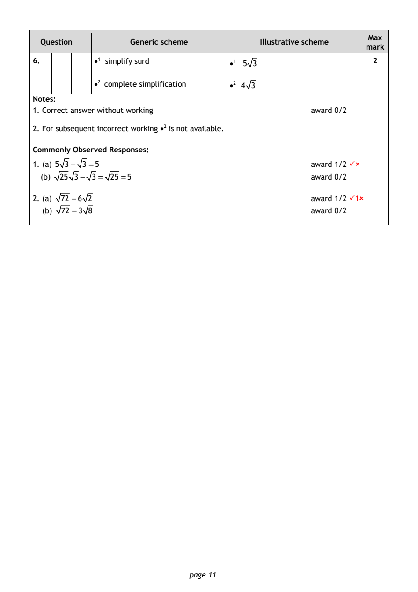
Selectable page text
Max
Question Generic scheme Illustrative scheme
mark
6. •1 simplify surd •1 5 3 2
•2 complete simplification •2 4 3
Notes:
1. Correct answer without working award 0/2
2. For subsequent incorrect working •² is not available.
Commonly Observed Responses:
1. (a) 5 3− 3 =5 award 1/2 ✓
(b) 25 3− 3 = 25 =5 award 0/2
2. (a) 72 =6 2 award 1/2 ✓1
(b) 72 =3 8 award 0/2
page 11PDF page 12
Paper 1, Question 7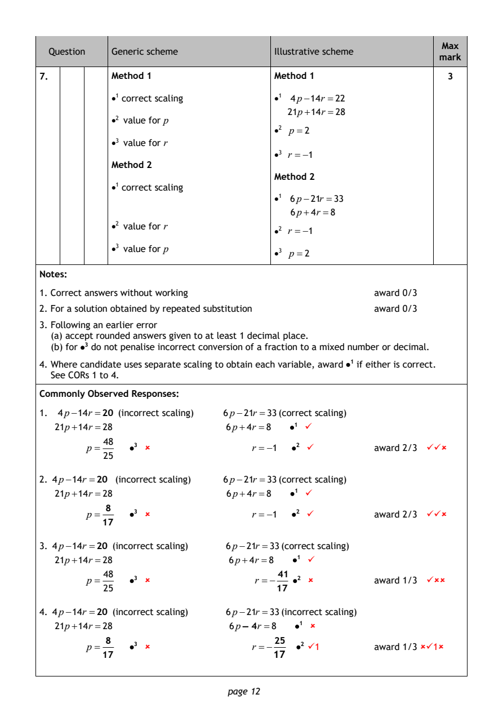
Selectable page text
Max
Question Generic scheme Illustrative scheme
mark
7. Method 1 Method 1 3
•1 correct scaling •1 4p−14r =22
21p+14r =28
•2 value for p
•2 p =2
•3 value for r
•3 r =−1
Method 2
Method 2
•1 correct scaling
•1 6p−21r =33
6p+4r =8
•2 value for r
•2 r =−1
•3 value for p
•3 p =2
Notes:
1. Correct answers without working award 0/3
2. For a solution obtained by repeated substitution award 0/3
3. Following an earlier error
(a) accept rounded answers given to at least 1 decimal place.
(b) for •³ do not penalise incorrect conversion of a fraction to a mixed number or decimal.
4. Where candidate uses separate scaling to obtain each variable, award •¹ if either is correct.
See CORs 1 to 4.
Commonly Observed Responses:
1. 4p−14r =20 (incorrect scaling) 6p−21r =33(correct scaling)
21p+14r =28 6p+4r =8 •1 ✓
48
p = •3 r =−1 •2 ✓ award 2/3 ✓✓
25
2. 4p−14r =20 (incorrect scaling) 6p−21r =33(correct scaling)
21p+14r =28 6p+4r =8 •1 ✓
8
p = •3 r =−1 •2 ✓ award 2/3 ✓✓
17
3. 4p−14r =20 (incorrect scaling) 6p−21r =33(correct scaling)
21p+14r =28 6p+4r =8 •1 ✓
48 41 ₂
p = •3 r =− • award 1/3 ✓
25 17
4. 4p−14r =20 (incorrect scaling) 6p−21r =33(incorrect scaling)
21p+14r =28 6p− 4r =8 •1
8 25
p = •3 r =− • ✓1 award 1/3 ✓1
17 17 ²
page 12PDF page 13
Paper 1, Question 8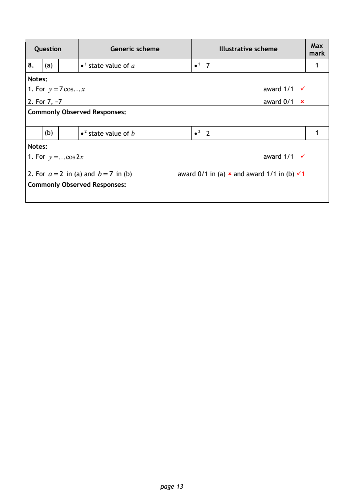
Selectable page text
Max
Question Generic scheme Illustrative scheme
mark
8. (a) • 1 state value of a • 1 7 1
Notes:
1. For y=7cos x award 1/1 ✓
2. For 7, −7 award 0/1
Commonly Observed Responses:
(b) • 2 state value of b • 2 2 1
Notes:
1. For y = cos2x award 1/1 ✓
2. For a=2 in (a) and b=7 in (b) award 0/1 in (a) and award 1/1 in (b) ✓1
Commonly Observed Responses:
page 13PDF page 14
Paper 1, Question 9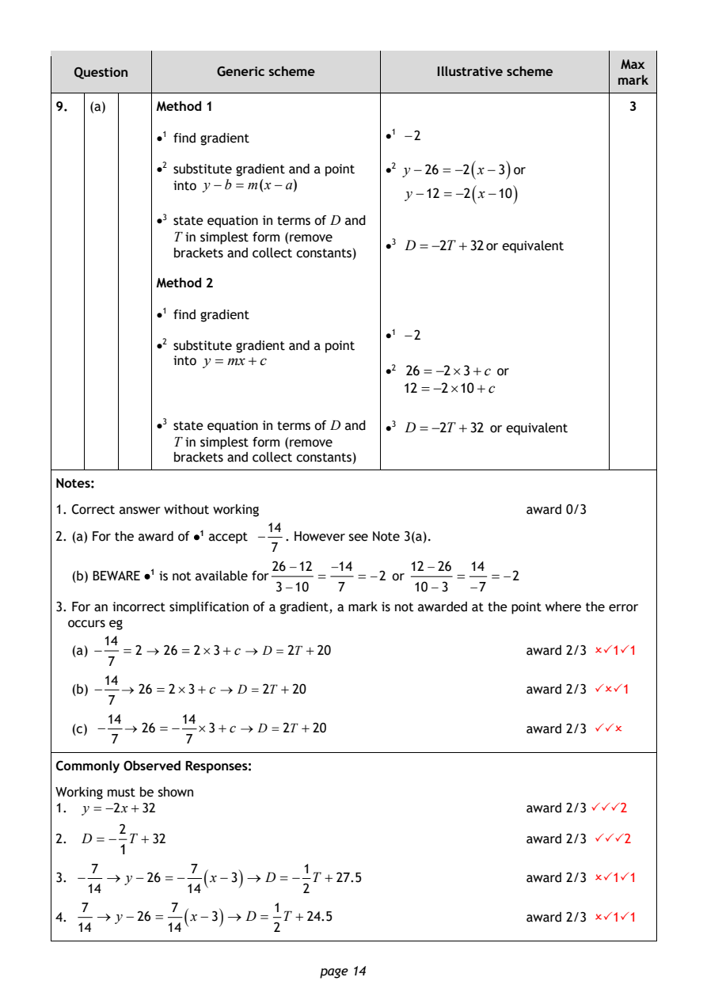
Selectable page text
Max
Question Generic scheme Illustrative scheme
mark
9. (a) Method 1 3
•1 find gradient •1 −2
•2 substitute gradient and a point •2 y−26 = −2 (x−3 ) or
into y −b = m(x−a)
y−12 = −2 (x−10 )
•3 state equation in terms of D and
T in simplest form (remove
•3 D = −2T +32or equivalent
brackets and collect constants)
Method 2
•1 find gradient
•1 −2
•2 substitute gradient and a point
into y = mx+c
•2 26 = −2×3+c or
12 = −2×10+c
•3 state equation in terms of D and •3 D = −2T +32 or equivalent
T in simplest form (remove
brackets and collect constants)
Notes:
1. Correct answer without working award 0/3
14
2. (a) For the award of •¹ accept − . However see Note 3(a).
7
26−12 −14 12−26 14
(b) BEWARE •¹ is not available for = = −2 or = = −2
3−10 7 10−3 −7
3. For an incorrect simplification of a gradient, a mark is not awarded at the point where the error
occurs eg
14
(a) − = 2 → 26 = 2×3+c → D = 2T +20 award 2/3 11
7
14
(b) − → 26 = 2×3+c → D = 2T +20 award 2/3 1
7
14 14
(c) − → 26 = − ×3+c → D = 2T +20 award 2/3
7 7
Commonly Observed Responses:
Working must be shown
1. y = −2x+32 award 2/3 2
2
2. D = − T +32 award 2/3 2
1
7 7 1
3. − → y −26 = − (x−3 ) → D = − T +27.5 award 2/3 11
14 14 2
7 7 1
4. → y −26 = (x−3 ) → D = T +24.5 award 2/3 11
14 14 2
page 14PDF page 15
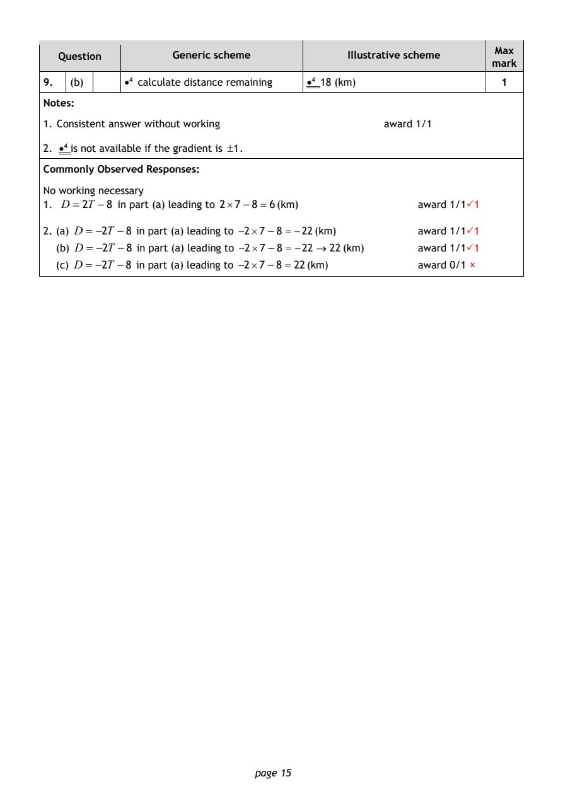
Selectable page text
Max
Question Generic scheme Illustrative scheme
mark
9. (b) •4 calculate distance remaining •4 18 (km) 1
Notes:
1. Consistent answer without working award 1/1
2. •⁴ is not available if the gradient is ±1.
Commonly Observed Responses:
No working necessary
1. D = 2T −8 in part (a) leading to 2×7−8 = 6(km) award 1/11
2. (a) D = −2T −8 in part (a) leading to −2×7 −8 = −22(km) award 1/11
(b) D = −2T −8 in part (a) leading to −2×7 −8 = −22 → 22(km) award 1/11
(c) D = −2T −8 in part (a) leading to −2×7−8 = 22(km) award 0/1
page 15PDF page 16
Paper 1, Question 10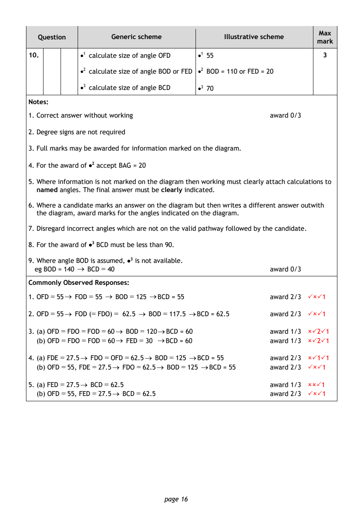
Selectable page text
Max
Question Generic scheme Illustrative scheme
mark
10. •1 calculate size of angle OFD •1 55 3
•2 calculate size of angle BOD or FED •² BOD = 110 or FED = 20
•3 calculate size of angle BCD •3 70
Notes:
1. Correct answer without working award 0/3
2. Degree signs are not required
3. Full marks may be awarded for information marked on the diagram.
4. For the award of •² accept BAG = 20
5. Where information is not marked on the diagram then working must clearly attach calculations to
named angles. The final answer must be clearly indicated.
6. Where a candidate marks an answer on the diagram but then writes a different answer outwith
the diagram, award marks for the angles indicated on the diagram.
7. Disregard incorrect angles which are not on the valid pathway followed by the candidate.
8. For the award of •³ BCD must be less than 90.
9. Where angle BOD is assumed, •³ is not available.
eg BOD = 140 → BCD = 40 award 0/3
Commonly Observed Responses:
1. OFD = 55→ FOD = 55 → BOD = 125 →BCD = 55 award 2/31
2. OFD = 55→ FOD (= FDO) = 62.5 → BOD = 117.5 →BCD = 62.5 award 2/31
3. (a) OFD = FDO = FOD = 60→ BOD = 120→BCD = 60 award 1/321
(b) OFD = FDO = FOD = 60→ FED = 30 →BCD = 60 award 1/321
4. (a) FDE = 27.5→ FDO = OFD = 62.5→ BOD = 125 →BCD = 55 award 2/311
(b) OFD = 55, FDE = 27.5→ FDO = 62.5→ BOD = 125 →BCD = 55 award 2/31
5. (a) FED = 27.5→ BCD = 62.5 award 1/31
(b) OFD = 55, FED = 27.5→ BCD = 62.5 award 2/31
page 16PDF page 17
Paper 1, Question 11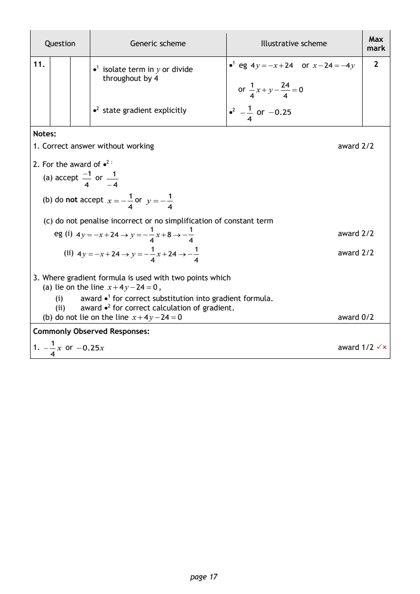
Selectable page text
Max
Question Generic scheme Illustrative scheme
mark
11. •1 eg 4y=−x+24 or x−24=−4y 2
•1 isolate term in y or divide
throughout by 4
or
1
x+ y−
24
=0
4 4
•2 state gradient explicitly •2 − 1 or −0.25
4
Notes:
1. Correct answer without working award 2/2
2. For the award of •² ^{:}
−1 1
(a) accept or
4 −4
1 1
(b) do not accept x =− or y =−
4 4
(c) do not penalise incorrect or no simplification of constant term
1 1
eg (i) 4y =−x+24→ y =− x+8→− award 2/2
4 4
1 1
(ii) 4y=−x+24→ y=− x+24→− award 2/2
4 4
3. Where gradient formula is used with two points which
(a) lie on the line x+4y−24=0,
(i) award •¹ for correct substitution into gradient formula.
(ii) award •² for correct calculation of gradient.
(b) do not lie on the line x+4y−24=0 award 0/2
Commonly Observed Responses:
1
1. − x or −0.25x award 1/2
4
page 17PDF page 18
Paper 1, Question 12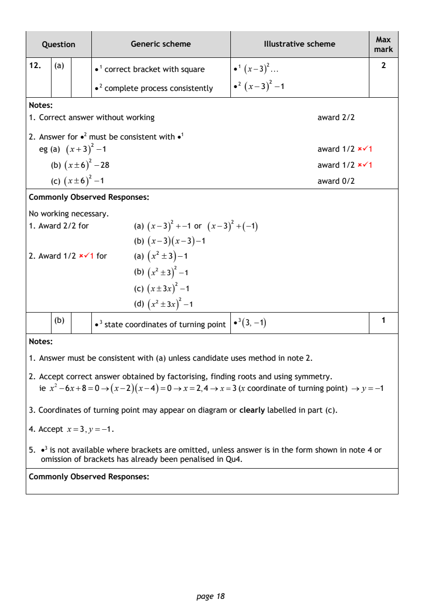
Selectable page text
Max
Question Generic scheme Illustrative scheme
mark
12. (a) • 1 correct bracket with square • 1 (x−3)² 2
• 2 complete process consistently • 2 (x−3)² −1
Notes:
1. Correct answer without working award 2/2
2. Answer for •² must be consistent with •¹
eg (a) (x+3)² −1 award 1/2 ✓1
(b) (x±6)² −28 award 1/2 ✓1
(c) (x±6)² −1 award 0/2
Commonly Observed Responses:
No working necessary.
1. Award 2/2 for (a) (x−3)² +−1 or (x−3)² +(−1)
(b)
(x−3)(x−3)−1
( )
2. Award 1/2 ✓1 for (a) x² ±3 −1
(b) ( x² ±3 ) ² −1
(c) (x±3x)² −1
(d) ( x² ±3x ) ² −1
(b)
• 3 s tate coordinates of turning point • ³
(3, −1) 1
Notes:
1. Answer must be consistent with (a) unless candidate uses method in note 2.
2. Accept correct answer obtained by factorising, finding roots and using symmetry.
ie x² −6x+8=0→(x−2)(x−4)=0→x=2,4→x=3(x coordinate of turning point) → y =−1
3. Coordinates of turning point may appear on diagram or clearly labelled in part (c).
4. Accept x=3,y =−1.
5. •³ is not available where brackets are omitted, unless answer is in the form shown in note 4 or
omission of brackets has already been penalised in Qu4.
Commonly Observed Responses:
page 18PDF page 19
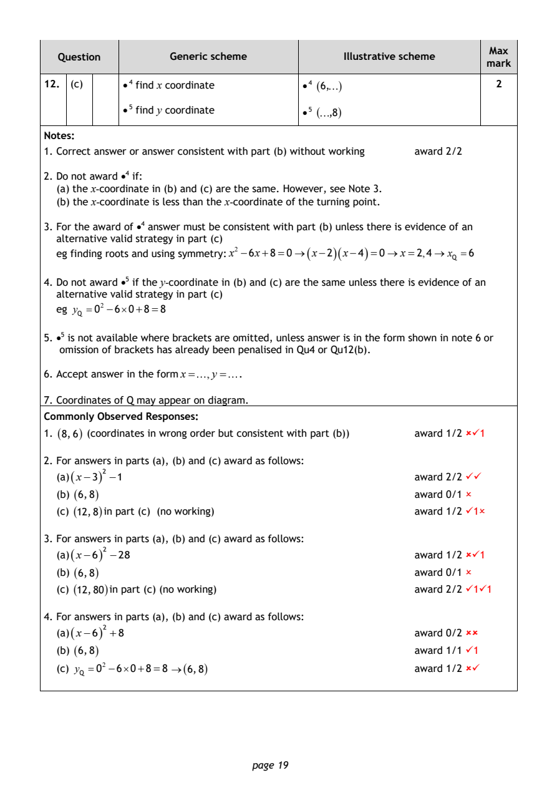
Selectable page text
Max
Question Generic scheme Illustrative scheme
mark
12. (c) • 4 find x coordinate • 4 (6, ) 2
• 5 find y coordinate • 5 ( ,8)
Notes:
1. Correct answer or answer consistent with part (b) without working award 2/2
2. Do not award •⁴ if:
(a) the x-coordinate in (b) and (c) are the same. However, see Note 3.
(b) the x-coordinate is less than the x-coordinate of the turning point.
3. For the award of •⁴ answer must be consistent with part (b) unless there is evidence of an
alternative valid strategy in part (c)
eg finding roots and using symmetry:x² −6x+8=0→(x−2)(x−4)=0→x=2,4→x_{Q} =6
4. Do not award •⁵ if the y-coordinate in (b) and (c) are the same unless there is evidence of an
alternative valid strategy in part (c)
eg y_{Q} =0² −6×0+8=8
5. •⁵ is not available where brackets are omitted, unless answer is in the form shown in note 6 or
omission of brackets has already been penalised in Qu4 or Qu12(b).
6. Accept answer in the formx= ,y= .
7 . Coordinates of Q may appear on diagram.
Commonly Observed Responses:
1. (8,6) (coordinates in wrong order but consistent with part (b)) award 1/2 ✓1
2. For answers in parts (a), (b) and (c) award as follows:
(a)(x−3)² −1 award 2/2 ✓✓
(b) (6,8) award 0/1
(c) (12,8)in part (c) (no working) award 1/2 ✓1
3. For answers in parts (a), (b) and (c) award as follows:
(a)(x−6)² −28 award 1/2 ✓1
(b) (6,8) award 0/1
(c) (12,80)in part (c) (no working) award 2/2 ✓1✓1
4. For answers in parts (a), (b) and (c) award as follows:
(a)(x−6)² +8 award 0/2
(b) (6,8) award 1/1 ✓1
(c) y_{Q} =0² −6×0+8=8 →(6,8) award 1/2 ✓
page 19PDF page 20
Paper 1, Question 13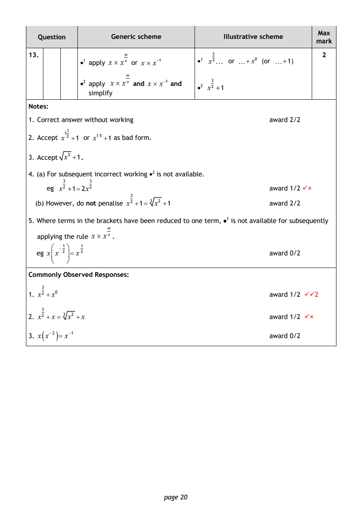
Selectable page text
Max
Question Generic scheme Illustrative scheme
mark
13. 2
•1 apply x × x^{m}ⁿ or x × x⁻¹ •1 x³² or +x⁰ (or +1)
•2 apply x × x^{m}ⁿ and x × x⁻¹ and
•2 x³² +1
simplify
Notes:
1. Correct answer without working award 2/2
2. Accept x¹²¹ +1 or x¹^{.}⁵ +1 as bad form.
3. Accept x³ +1.
4. (a) For subsequent incorrect working •² is not available.
eg x³² +1=2x³² award 1/2 ✓
(b) However, do not penalise x³² +1= ³ x² +1 award 2/2
5. Where terms in the brackets have been reduced to one term, •¹ is not available for subsequently
applying the rule x × x^{m}ⁿ .
eg xx⁻²¹= x²¹ award 0/2
Commonly Observed Responses:
1. x³² +x⁰ award 1/2 ✓✓2
2. x³² +x = ³ x² +x award 1/2 ✓
( )
3. x x⁻² = x⁻¹ award 0/2
page 20PDF page 21
Paper 1, Question 14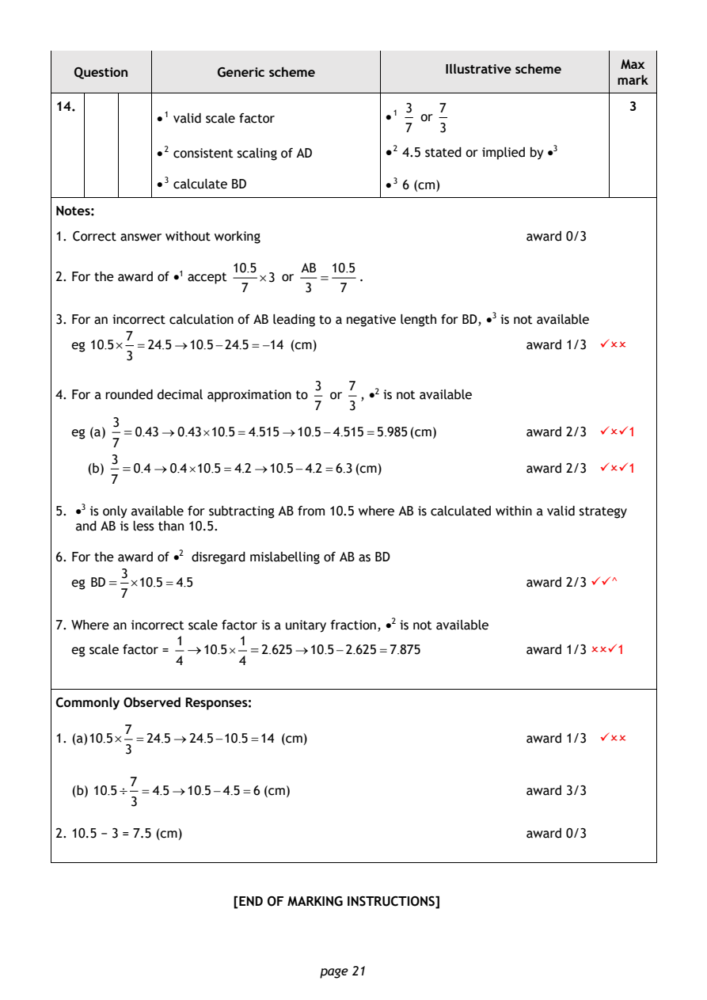
Selectable page text
Question Generic scheme Illustrative scheme
Max
mark
14. 3 7 3
• 1 valid scale factor • 1 or
7 3
• 2 consistent scaling of AD • 2 4.5 stated or implied by •³
• 3 calculate BD • 3 6 (cm)
Notes:
1. Correct answer without working award 0/3
10.5 AB 10.5
2. For the award of •¹ accept ×3 or = .
7 3 7
3. For an incorrect calculation of AB leading to a negative length for BD, •³ is not available
7
eg 10.5× =24.5→10.5−24.5=−14 (cm) award 1/3 ✓
3
3 7 ₂
4. For a rounded decimal approximation to or , • is not available
7 3
3
eg (a) =0.43→0.43×10.5=4.515→10.5−4.515=5.985(cm) award 2/3 ✓✓1
7
3
(b) =0.4→0.4×10.5=4.2→10.5−4.2=6.3(cm) award 2/3 ✓✓1
7
5. •³ is only available for subtracting AB from 10.5 where AB is calculated within a valid strategy
and AB is less than 10.5.
6. For the award of •² disregard mislabelling of AB as BD
3
eg BD= ×10.5=4.5 award 2/3 ✓✓^
7
7. Where an incorrect scale factor is a unitary fraction, •² is not available
1 1
eg scale factor = →10.5× =2.625→10.5−2.625=7.875 award 1/3 ✓1
4 4
Commonly Observed Responses:
7
1. (a)10.5× =24.5→24.5−10.5=14 (cm) award 1/3 ✓
3
7
(b) 10.5÷ =4.5→10.5−4.5=6(cm) award 3/3
3
2. 10.5 − 3 = 7.5 (cm) award 0/3
[END OF MARKING INSTRUCTIONS]
page 21